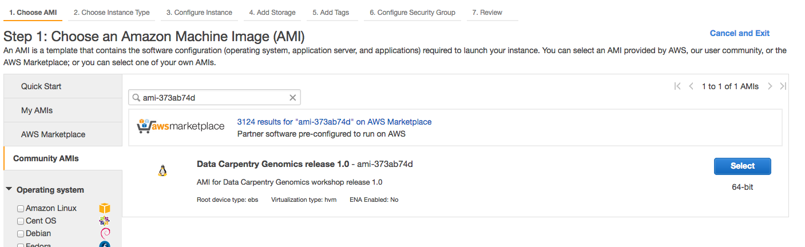
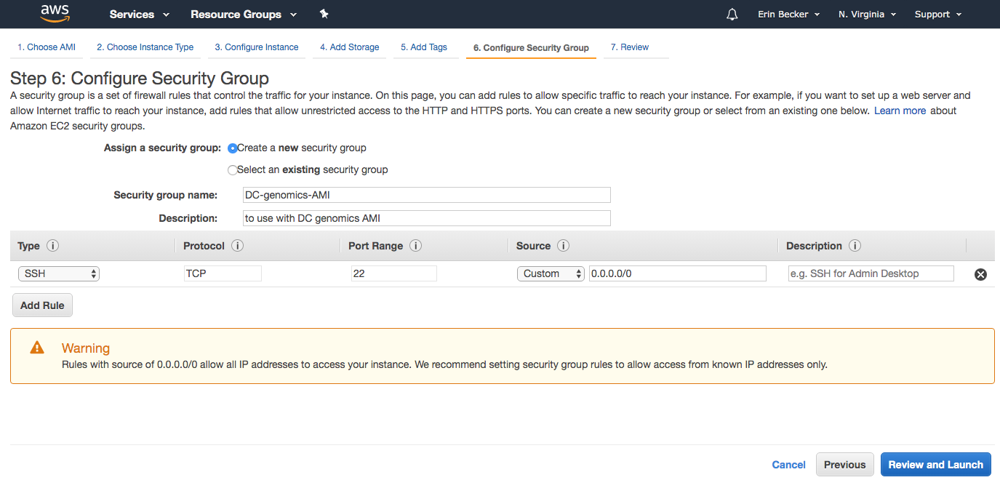
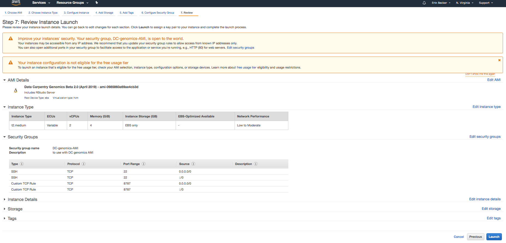
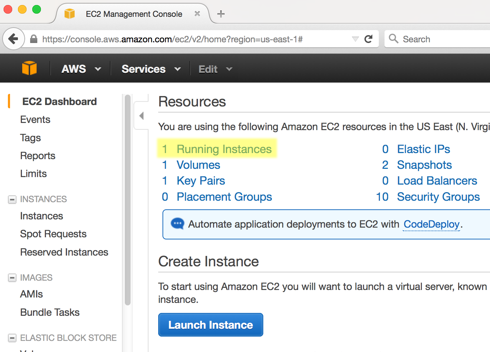
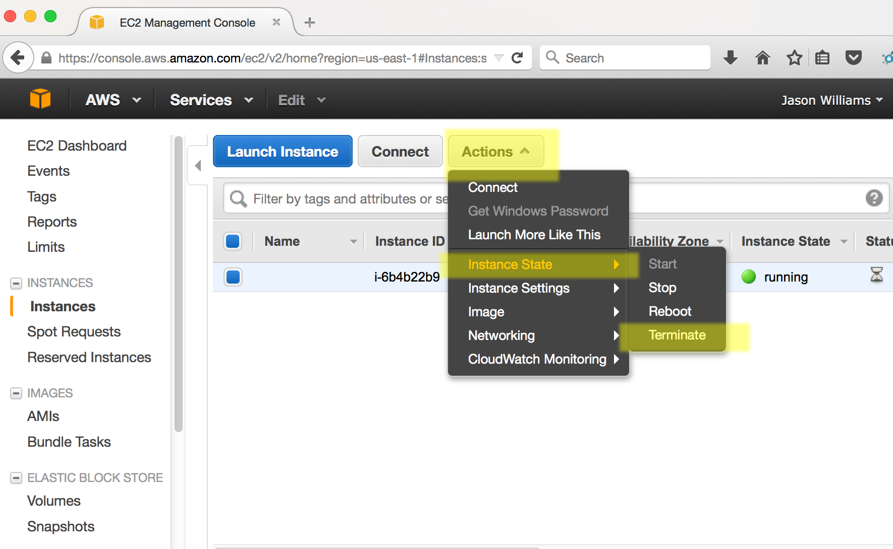

Do I need to create my own instances?
If you are:
- teaching at or attending a centrally organized Data Carpentry workshop,
- a Maintainer for one of the Genomics lessons, or
- contributing to the Genomics lessons,
The Carpentries staff will create AMI instances for you. Please contact team@carpentries.org.
If you are:
- teaching at a self-organized workshop,
- working through these lessons on your own outside of a workshop,
- practicing your skills after a workshop, or
- using these lessons for a teaching demonstration as part of your Instructor checkout for The Carpentries,
you will need to create your own AMI instances using the instructions below. The cost of using this AMI for a few days, with the t2.medium instance type is very low (about USD $1.50 per day). Data Carpentry has no control over AWS pricing structure and provides this cost estimate with no guarantees. Please read AWS documentation on pricing for up-to-date information.
Launching an instance on Amazon Web Services
Prerequisites
- Form of payment (credit card)
- Understanding of Amazon’s billing and payment (See: Getting started with AWS Billing and Cost Management)
- You can use some of Amazon Web Services for free, or see if you qualify for an AWS Grant (See: https://aws.amazon.com/grants/ ) if you are using AWS for education. The free level of service will not be sufficient for working with the amount of data we are using for our lessons.
Create an AWS account
1. Go to Amazon Web Services https://aws.amazon.com/ 2. Follow the button to sign up for an account - you will need to agree to Amazon’s terms and conditions and provide credit card information.
Sign into AWS and Launch an Instance
1. Sign into the AWS EC2 Dashboard: https://console.aws.amazon.com/ec2/
2. Click the ‘Launch Instance’ button

3. In ‘Step 1’ you will be asked to choose an Amazon Machine Image (AMI), on the lefthand side, look for ‘Community AMIs’ and then search for the AMI listed on this curriculum’s Setup page; select that image

4. For ‘Choose an Instance Type’ select t2.medium; then click ‘Review and Launch’

5. Click on “6. Configure Security Group” in the top navigation menu. If this is your first time working with this AMI on your AWS account, choose “create a new security group”. Name your security group something descriptive (for example “DC-genomics-AMI”) and enter a description into the description box (for example “to use with DC genomics AMI”).
Your security group should now look like this:

6. Click “Add Rule”. A new row will appear. Select “Custom TCP Rule” and enter “8787” into box labeled “Port Range”. Under the “Source” box, select “Anywhere” for both security rules. Click “Review and Launch”. You should now see a screen that looks like this:

7. Click “Launch”. You will be asked to select an existing key pair or create a new key pair. Select “Create a new key pair” and enter a name for your key pair.

8. Then click “Download Key Pair”. Your key pair file ends in .pem. Move it from your Downloads folder to a stable location on your
computer. For these instructions, we will move it to our Desktop. You can do this by dragging and dropping the file from your Downloads
folder to your desktop. Then click “Launch Instance”.
You instance will now be launched. You should follow the links to ‘Create billing alerts’ and then the instructions below for connecting to and terminating your Amazon Instance.
Connect to your Amazon Instance (Mac OS X)
1. Log into your AWC EC2 Dashboard https://console.aws.amazon.com/ec2/
2. You should see that you have one instance. To proceed, the instance state must be ‘running’ (if you just launched the instance it will take <5 min for the instance to start running).

3. At the bottom of the dashboard, you should see a Public DNS which will look something like ec2.12.2.45.678.compute-1.amazonaws.com. Copy that address (you may wish make a note of it as you will need this each time you connect.)
4. Open the terminal application on your Mac. Use the following commands to navigate to your Desktop and modify the file permissions for your key pair file.
$ cd ~/Desktop $ chmod 700 *.pem5. You can now connect to your instance using ‘ssh’. Your command will be something like this:
$ ssh -i testing-DC-AMI.pem ubuntu@ec2-3-89-254-171.compute-1.amazonaws.comBe sure to replace
testing-DC-AMI.pemwith the name of your .pem file and to replaceec2-3-89-254-171.compute-1.amazonaws.comwith the DNS for your image.You should now be connected to your personal instance. To navigate to the appropriate starting point for the lessons, use the following command:
$ cd ../dcuser/You can confirm that you are in the correct location by using the
whoamiandpwdcommands, which should yield the following results:$ whoami ubuntu $ pwd /home/dcuser

Connect to your Amazon instance (Windows)
Download the PuTTY application at: http://the.earth.li/~sgtatham/putty/latest/x86/putty.exe
Log into your AWC EC2 Dashboard https://console.aws.amazon.com/ec2/
You should see that you have one instance, make sure instance state is ‘running’ (if you just launched the instance it will take <5 min for the instance to start running)
- At the bottom of the dashboard, you should see a Public DNS which will look something like ec2.12.2.45.678.compute-1.amazonaws.com. Copy that address (you may wish make a note of it as you will need this each time you connect.)
Start PuTTY. In the section ‘Specify the destination you want to connect to’ for ‘Host Name (or IP address)’ paste in the DNS address and click ‘Open’
When prompted to login as, enter ‘dcuser’; you may be notified that the authenticity of the host cannot be verified - if so, ignore the warning an continue connecting
When prompted, enter your password.
You should now be connected to your personal instance. You can confirm this with the following commands;
whoamiandpwd, which should yield the following results:Last login: Thu Jul 30 13:21:08 2015 from 8.sub-70-197-200.myvzw.com $ whoami dcuser $ pwd /home/dcuser
Terminating your instance
Very Important Warning - Avoid Unwanted Charges
Please remember, for as long as this instance is running, you will be charged for your usage. You can see an estimate of the current charge from your AWS EC2 dashboard by clicking your name (Account name) on the upper right of the dashboard and selecting ‘Billing & Cost Management’. DO NOT FORGET TO TERMINATE YOUR INSTANCE WHEN YOU ARE DONE
When you are finished with your instance, you must terminate it to avoid unwanted charges. Follow the following steps.
- Sign into AWS and go to the EC2 Dashboard: https://console.aws.amazon.com/ec2/
- Under ‘Resources’ select ‘Running Instances’
- Select the instance you wish to terminate, then click ‘Actions’

- Under ‘Instance State’ select terminate.
Warning
Terminating an instance will delete any data on this instance, so you must move any data you wish to save off the instance.
- Select ‘Yes, Terminate’ to terminate the instance.